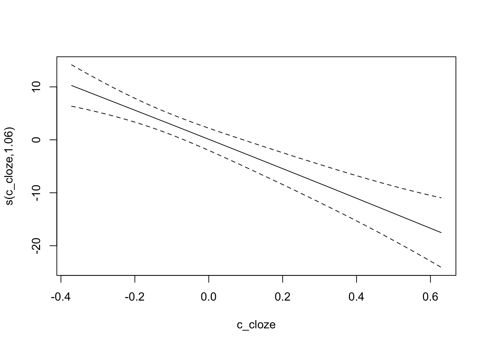
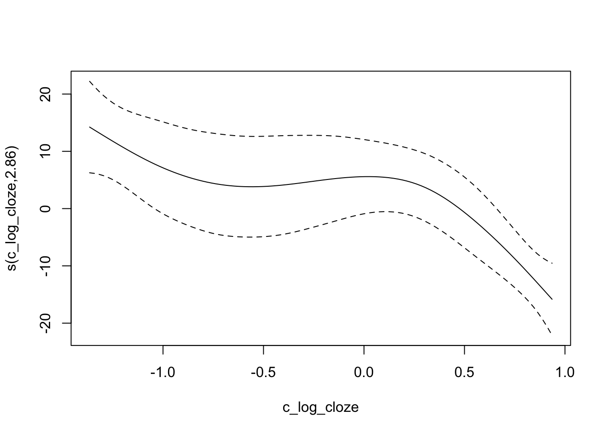

8 Open peer review: reproducibility
8.1 Part 1
Open science stelt onderzoeken meer open voor participatie, beoordeling/weerlegging, verbetering en hergebruik. Repita heeft acht transparantie criteria opgesteld waarmee de reproduceerbaarheid van een onderzoek geëvalueerd kan worden. Het artikel dat in deze opdracht wordt geëvalueerd is “Glycomic and Proteomic Changes in Aging Brain Nigrostriatal Pathway”. Het algemene doel van dit artikel is het bepalen van het effect van leeftijdsgerelateerde veranderingen in glycaan receptoren op de binding van Adeno-associated virussen. Gen therapie met Adeno-associated virussen is succesvol geweest in pre-klinische modellen van de ziekte van Parkinson, echter bij klinische trials met mensen is het niet efficiënt bewezen.
Het leeftijdsonderzoek werd uitgevoerd op zes jonge en zes oude mannelijke F344 ratten. De hersenen van de ratten zijn post-mortum gesectioneerd, na meerdere rondes van digestie konden hieruit de te onderzoeken glycan en proteomen worden geëxtraheert. Vervolgens is er een HILIC-MS of LC-MS analyse uitgevoerd op de samples, waarna de data is geanalyseerd met verscheidene pakketten en softwares.
Verschillende brein regio-specifieke HS disaccharide profielen waren waargenomen in oude vergeleken met jonge ratten. Ook waren er brein regio- en leeftijdsspecifieke N-glycaan profielen waargenomen. In het nigrostriatale pathway van oude ratten zijn ook veranderingen in brein regio-specifieke eiwit-expressie waargenomen.
De evaluatie van de acht criteria is in het onderstaande tabel weergeven. Per criteria zal ik nog verdere uitleg geven waarom ik voor de score heb gekozen. De aanleiding voor het artikel is aanwezig, de onderzoekers vertellen eerst over AAV als gen therapie en hoe dit niet effectief is in mensen. Hierbij geven ze aan waarom zij denken dat het niet werkt en gaan vervolgens in het onderzoek achterhalen of dit klopt. Er is een data availability statement aanwezig, de data is bereikbaar op de PRIDE repository met project accession nummer PXD008990. De locatie van de data is ook weergeven, met een link naar de PRIDE repository; https://www.ebi.ac.uk/pride/archive?keyword=PXD008990. De study location is niet genoemd in de methodes van het artikel. Author review heeft als score Tier 3, dit houdt in dat de auteur zijn/haar instituuts e-mail adress heeft gebruikt als primair contact. Wel is dit maar bij een van de auteurs genoteerd. Een ethics statement is ook niet aanwezig in dit artikel. Een funding statement is weergeven, de funding was verstrekt door NIH grants P41GM104603, R21CA177479, and R56AG052328. De code availability is ook weergeven, onder andere Peak Studio versie 8.0 en GlyReSoft versie 0.3.1 waren gebruikt voor de analyse van de data.
6 van de 8 criteria zijn transparant, hiermee zou ik concluderen dat de data reproduceerbaar is, maar er is wel nog ruimte voor verbetering. De ethische statements en de study locatie moeten nog weergeven worden om te voldoen aan de 8 criteria.
library(tidyverse)
knitr::kable(
tibble(
"Transparency Criteria" = c("Study purpose", "Data availability statement", "Data location", "Study location", "Author review", "Ethics statement", "Funding statement", "Code availability"),
"Definition" = c("A concise statement in the introduction of the article, often in the last paragraph, that establishes the reason the research was conducted. Also called the study objective.", "A statement, in an individual section offset from the main body of text, that explains how or if one can access a study’s data. The title of the section may vary, but it must explicitly mention data; it is therefore distinct from a supplementary materials section.", "Where the article’s data can be accessed, either raw or processed.", "Author has stated in the methods section where the study took place or the data’s country/region of origin.", "The professionalism of the contact information that the author has provided in the manuscript.", "A statement within the manuscript indicating any ethical concerns, including the presence of sensitive data.", "A statement within the manuscript indicating whether or not the authors received funding for their research.", "Authors have shared access to the most updated code that they used in their study, including code used for analysis."),
"Response Type" = c("Binary", "Binary", "Found Value", "Binary; Found Value", "Found Value", "Binary", "Binary", "Binary"),
"Score" = c("Yes", "Yes", "External Repository; PRIDE", "No", "Tier 3", "No", "Yes", "Yes")
))| Transparency Criteria | Definition | Response Type | Score |
|---|---|---|---|
| Study purpose | A concise statement in the introduction of the article, often in the last paragraph, that establishes the reason the research was conducted. Also called the study objective. | Binary | Yes |
| Data availability statement | A statement, in an individual section offset from the main body of text, that explains how or if one can access a study’s data. The title of the section may vary, but it must explicitly mention data; it is therefore distinct from a supplementary materials section. | Binary | Yes |
| Data location | Where the article’s data can be accessed, either raw or processed. | Found Value | External Repository; PRIDE |
| Study location | Author has stated in the methods section where the study took place or the data’s country/region of origin. | Binary; Found Value | No |
| Author review | The professionalism of the contact information that the author has provided in the manuscript. | Found Value | Tier 3 |
| Ethics statement | A statement within the manuscript indicating any ethical concerns, including the presence of sensitive data. | Binary | No |
| Funding statement | A statement within the manuscript indicating whether or not the authors received funding for their research. | Binary | Yes |
| Code availability | Authors have shared access to the most updated code that they used in their study, including code used for analysis. | Binary | Yes |
8.2 Part 2
Geselecteerd project:
Link: https://osf.io/324jm/
Beschrijf in eigen worden wat de intentie van de code is.
Met behulp van algemene additieve gemengde modellen (GAMMs) proberen ze na te gaan wat het effect van lineaire en log-getransformeerde cloze probability op het verband tussen de woordvoorspelbaarheid en de leestijd.
In terms of readibility of the code, how would you grade (1(very bad)-5(very good)) the code available.
Ik zou het een 4 geven, er wordt niet duidelijk uitgelegd waarom bepaalde functies worden gebruikt of wat er wordt uitgevoerd. Verder is de code wel duidelijk en is er goede structuur waarbij headers zijn gebruikt.
Run the script or code that is available to reproduce at least 1 figure
Experiment 1
Raw cloze probability:
dat = read.csv(file="../../Downloads/osfstorage-archive/data_and_materials/SPRT_LogLin_216.csv",head=T)
lin_gam=mgcv::gam(SUM_3RT_trimmed ~s(c_cloze) + s(SUB,bs="re")+
s(ITEM,bs= "re"),
data=dat, method = "REML")
#summary(lin_gam)
mgcv::plot.gam(lin_gam, select = 1)
Log-transformed cloze probability:
log_gam=mgcv::gam(SUM_3RT_trimmed ~ s(c_log_cloze) + s(SUB,bs="re")+
s(ITEM,bs= "re"),
data=dat,
method = "REML")
mgcv::plot.gam(log_gam, select = 1)
Experiment 2
Trying to reproduce GAMMs analysis. Raw cloze probability:
dat2 = read.csv(file="data_and_materials/LogLin_Naming.csv",head=T)
lin_gam=mgcv::gam(TRIM_RT ~s(c_cloze) + s(subject,bs="re")+
s(item,bs= "re"),
data=dat2, method = "REML")
mgcv::plot.gam(lin_gam, select = 1)Log-transformed cloze probability:
log_gam=mgcv::gam(TRIM_RT ~ s(c_log_cloze) + s(subject,bs="re")+
s(item,bs= "re"),
data=dat2,
method = "REML")
mgcv::plot.gam(log_gam, select = 1)Taken together on a scale from 1 (very hard) to 5 (very easy), how much effort did it take you to reproduce the visualization from the project, report or article?
Ik zou het overall een 3,5 geven, ik heb de visualisatie van 2 experimenten uitgevoerd. Experiment 1 ging in een keer zonder errors of flaws. Bij experiment 2 kreeg ik wel een error: ‘names’ attribute [1] must be the same length as the vector [0]. Aangezien ik wat data/ uitleg bij deze code mis lukt het me niet over welke attribute en vector het gaat. Het is me niet gelukt om deze code op te lossen.
Ik mis verder wel metadata en een README file.